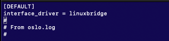
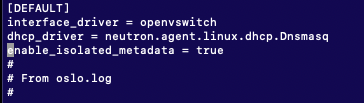
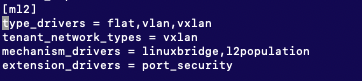
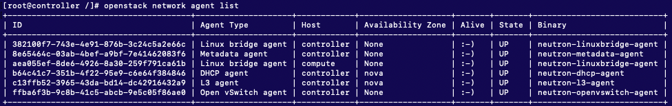
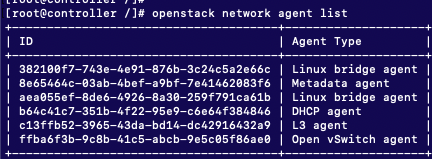
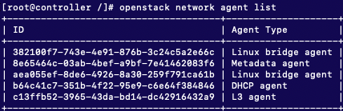
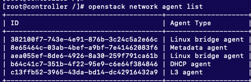

[OpenStack]
Linuxbridge agent를 OVS agent로 바꾸기
(오픈스택 로드밸런스를 위해)
(컨트롤러 노드)
1)
2) 설정 파일 변경

변경 전
여기에 다음을 수정, 추가.

(2)

위 부분([ml2])을 다음처럼 수정, 추가.
위 설정 파일 맨 마지막에 다음을 추가.
(4)
[DEFAULT] 섹션에 다음을 추가
시스템들 재시작
확인 ::
Open vSwitch agent 추가된 것 확인.

리눅스 브릿지 오픈스택에서 제거 ::
이렇게까지하면 지워지긴 하지만,
아래처럼 openstack network agent list 에는 남아있음.

이것도 지워주기 위해 리스트에서 ID를 확인하고,
위 명령어 실행 후 다시 리스트 확인해보면

지워진 것 확인!
[2] compute 노드
컴퓨트 노드에서 작업.
[DEFAULT] 섹션에 다음을 추가.
맨 마지막 줄에 추가
마지막 줄에 추가.
[DEFAULT] 섹션에 추가
서비스 시작
Linux bridge agent의 ID 확인.

리눅스 브릿지 오픈스택에서 제거 하는 법
(제거해도 다시 살아나는 경우)
*** 컴퓨트에서도
다음을 해 주어야 다시 안살아남 !!